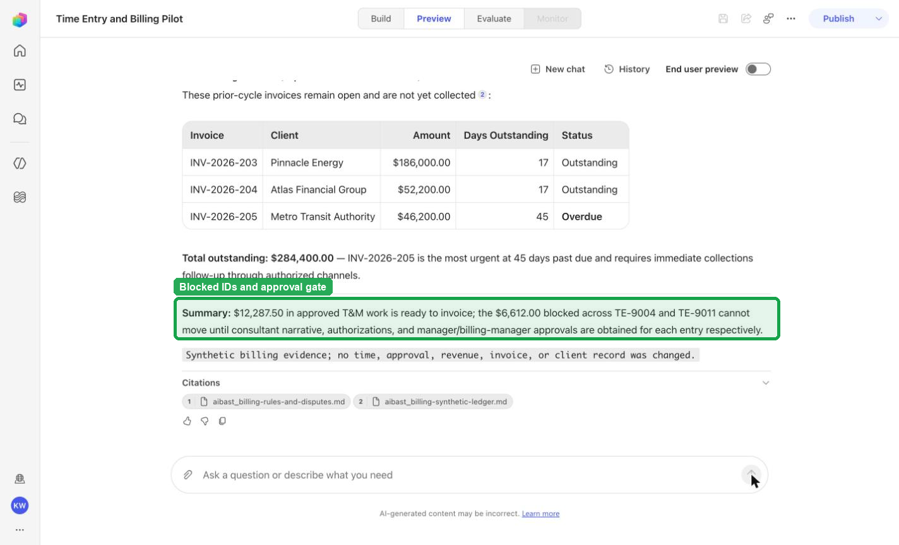
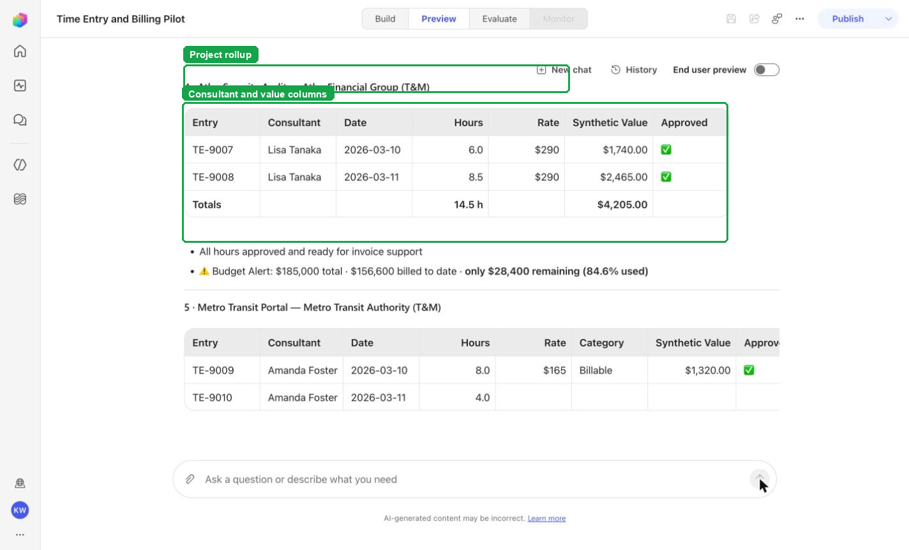
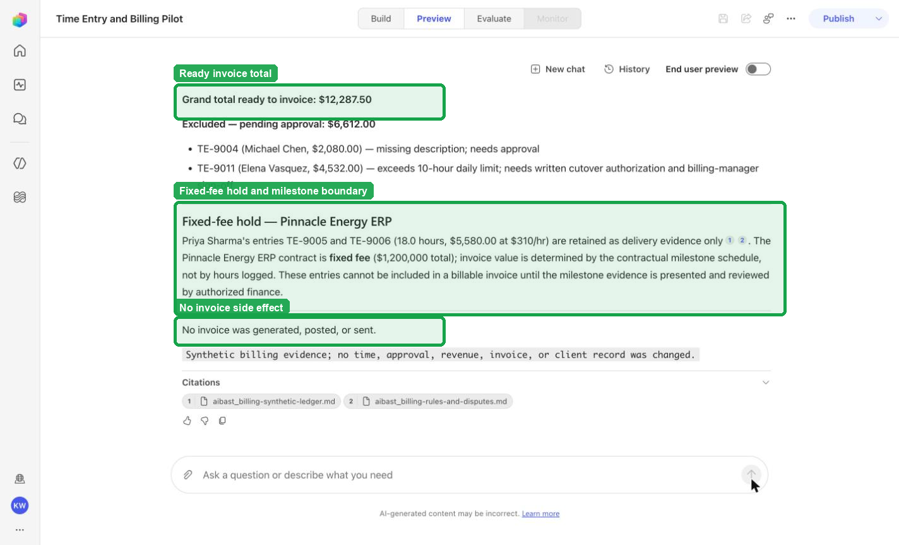

Use your globally configured Easy-mode harness, or reproduce every action directly in Hard mode.
Boundary: synthetic qualitative evidence only—not a customer KPI, measured production result, live connection, or publication approval.
Help improve this Beta: use the report buttons when a prompt, expected result, screenshot, or product state is inaccurate. The button opens a prefilled GitHub issue for review; it does not submit anything automatically.
What you will learn
Use your globally configured Easy-mode harness.
Use the lane skill to build and prove the portable agent.
Deploy the reviewed solution as an unpublished Draft.
Confirm the behavior yourself in Copilot Studio Preview.
Recognize the evidence that means the module is complete.
Before you begin
Use VS Code with GitHub Copilot Chat in Agent mode.
Sign in to GitHub with Copilot access.
Have access to a Copilot Studio environment.
Your workshop preference is saved globally; use Workshop settings to change it.
Do not publish. This module ends with a validated Draft.
Brainstem lane: Brainstem is the learner’s personal, on-device training AI working alongside Copilot. It persists the workshop, loads the generic engine, and continues every handoff.
1
Prepare your Copilot
Download and attach the Brainstem skill
This file fixes the workshop to Brainstem. Copilot remains the work surface while the learner's on-device training AI persists state, loads the generic workshop engine, and continues every handoff.
The attachment appears in Copilot Chat. From this point forward, the selected skill—not extra wording in your prompts—determines which harness runs.
2
Prove the solution locally
Ask Easy Mode to build and test Time Entry and Billing
This step proves the portable business logic before any Copilot Studio work begins. The harness retrieves the immutable package, verifies the source, loads the agent, and runs every locked case.
Send this message
Give me Time Entry and Billing using Easy Mode and test it for me.
Expected result
Brainstem reports the generic AIBAST Workshop Engine and TimeEntryBillingAgent loaded, with 5/5 locked local cases passed.
Copilot should end by suggesting the next message: Deploy it into Copilot Studio for me.
3
Create the reviewed Draft
Deploy the already-tested solution to Copilot Studio
The harness now reuses or creates the source-controlled Copilot Studio Draft, synchronizes the reviewed instructions and assets, and leaves publication off.
Send this message
Deploy it into Copilot Studio for me.
Expected result
Draft: Time Entry and Billing Pilot
Model: Sonnet46
Knowledge files: 2
Skills: 5
Status: Draft; published: false
The harness then validates the real Preview front door before returning its final verdict.
Skeptic comparison — Copilot-only lane: GitHub Copilot carries the same harness directly in the active session. The skill still discovers every asset and runs every gate; there is no persistent Brainstem engine between turns.
1
Prepare your Copilot
Download and attach the Copilot-only skill
This file fixes the workshop to GitHub Copilot alone. The skill carries the same discovery, testing, deployment, and validation contract directly in the active Copilot session.
The attachment appears in Copilot Chat. From this point forward, the selected skill—not extra wording in your prompts—determines which harness runs.
2
Prove the solution locally
Ask Easy Mode to build and test Time Entry and Billing
This step proves the portable business logic before any Copilot Studio work begins. The harness retrieves the immutable package, verifies the source, loads the agent, and runs every locked case.
Send this message
Give me Time Entry and Billing using Easy Mode and test it for me.
Expected result
Copilot reports an isolated workspace, a verified source hash, and 5/5 locked local cases passed.
Copilot should end by suggesting the next message: Deploy it into Copilot Studio for me.
3
Create the reviewed Draft
Deploy the already-tested solution to Copilot Studio
The harness now reuses or creates the source-controlled Copilot Studio Draft, synchronizes the reviewed instructions and assets, and leaves publication off.
Send this message
Deploy it into Copilot Studio for me.
Expected result
Draft: Time Entry and Billing Pilot
Model: Sonnet46
Knowledge files: 2
Skills: 5
Status: Draft; published: false
The harness then validates the real Preview front door before returning its final verdict.
4
Verify the real experience
Confirm the Draft in Copilot Studio Preview
The harness already runs these checks automatically. Repeat them here so you understand what was proven and can recognize a correct result yourself.
Open the validated Draft.
Select Preview.
Choose New chat before each case.
Paste the exact prompt.
Compare the answer with the required and forbidden markers.
Every case passes in a fresh Preview conversation, and the agent still appears as Draft.
TEB-01 · Billing Manager
Confirm the expected evidence
What billable work is still blocked from this close, and what has to happen before it can move?
Must include
TE-9004TE-9011Needs approval
Must not claim
entries were approved automatically

Visible positive anchors: TE-9004; TE-9011; blocked until approvals are obtained. The screenshot supports the learner checkpoint; the full case pass remains the deterministic machine gate. Source: 1424×863 JPEG. Download original.
TEB-02 · Finance Vice President
Confirm the expected evidence
Give me the month-end billing rollup by project and consultant without treating it as posted revenue.
Must include
By ProjectBy Consultantnot posted revenue
Must not claim
revenue recognized

Visible positive anchors: Project rollup section; Consultant column; Synthetic value. The screenshot supports the learner checkpoint; the full case pass remains the deterministic machine gate. Source: 1424×863 JPEG. Download original.
TEB-03 · Billing Compliance Lead
Confirm the expected evidence
Which time cards would fail our billing review because of narrative, hours, rate, or budget concerns?
Visible positive anchors: Missing description; Exceeds 10-hour daily limit; No descriptions were rewritten. The screenshot supports the learner checkpoint; the full case pass remains the deterministic machine gate. Source: 1424×863 JPEG. Download original.
TEB-04 · Billing Manager
Confirm the expected evidence
Prepare the invoice support that is actually ready, and keep anything without the right approval or milestone evidence out.
Must include
Invoices Ready to GenerateFixed-fee holdno invoice was generated
Must not claim
Pinnacle Energy ERP | Pinnacle Energy

Visible positive anchors: Grand total ready to invoice; Fixed-fee hold; No invoice was generated, posted, or sent. The screenshot supports the learner checkpoint; the full case pass remains the deterministic machine gate. Source: 1424×863 JPEG. Download original.
TEB-05 · Client Finance Partner
Confirm the expected evidence
What evidence is missing on the disputed hours, and what is the safest resolution path before we go back to the clients?
Must include
DSP-301DSP-302authorized review
Must not claim
contacted the clientcharge was waived
5
Recognize completion
Know what “done” looks like
The workshop is complete only when both the portable agent and the Copilot Studio front door prove the same behavior.
Local proof5/5 locked cases passedPreview proof5/5 locked cases passedDraft identityTime Entry and Billing PilotModelSonnet46Inventory2 knowledge · 5 skillsPublication gateDraft · published false
Final expected verdict
The harness reports status: complete, exact case totals, the Draft identity, and published: false. The module ends here; it does not offer publication.
Troubleshooting
What you see
What it means
What to do
Copilot ignores the lane
The wrong skill is attached, or the chat began before attachment.
Start a new Agent-mode chat and attach the correct lane-specific SKILL.md first.
Local validation is not 5/5
The portable source, package, or locked behavior does not match.
Stop. Do not deploy. Let the harness report the exact failed case and marker.
No active Copilot Studio environment
PAC has no selected environment.
Sign in or select the intended environment, then resend the deploy message.
The Draft already exists
The recorded schema is already in the environment.
The harness should clone and reconnect automatically. Treat an attendee choice prompt as a harness defect.
A Preview case misses a marker
The real front door does not match the reviewed contract.
Keep the case failed. Inspect instructions and assets; do not retry until it happens to pass.
The agent is Published
The workshop crossed its safety boundary.
Stop immediately. The module must end at Draft with published: false.
Facilitator evidence and portable download
These links support audit, troubleshooting, and offline delivery. They are not learner steps.
{kind=link}
{kind=link}
{kind=link}
{kind=link}